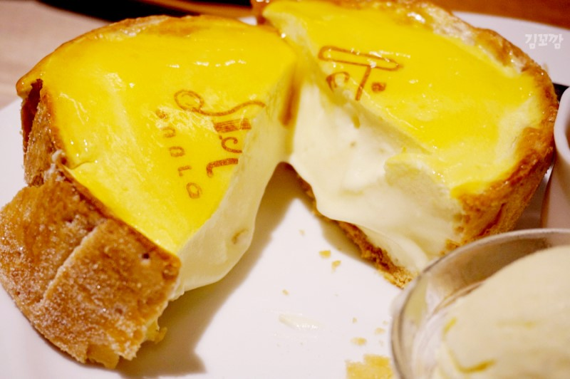

일본 여행
- 기간 : 2월 5일~ 7일
- 목적 : 일본의 다양한 먹거리 체험과 출사
- 총경비 : 30000엔
먹고 싶은 것
- 오코노미야끼
- 타코야끼
- 당고
- 파블로 타르트 
일본식 부침개. 오징어와 베이컨, 새우 등이 들어간다.
오사카 오코노미야끼 맛집 BEST 6
반죽에 문어를 넣어 동그랗게 구운 음식.
오사카 타코야끼 맛집 BEST 5
쌀가루이나 밀가루에 따뜻한 물을 부어 만든 반죽을 삶거나 찐 후 작고 둥글게 빚어 만든 일본의 대표 화과자.
오사카 당고 맛집
관련 링크
오사카에 가면 꼭 먹어야한다는 디저트인 파블로의 에그 타르트. 맛있겠다.
관련 링크
여행 일정
| 날짜 | 장소 | 경비(쇼핑/교통) | |
|---|---|---|---|
| 1일차 | 고베 | 10000엔 | 1200엔 |
| 이쿠타 신사 | |||
| 돈키호테 | |||
| 2일차 | 난바 센니치마에 | 6000엔 | 1100엔 |
| 도톤보리 | |||
| 파블로 타르트 | |||
| 3일차 | 하루카스 300 | 4500엔 | 1500엔 |
| 금각사 | |||
| 텐류지 | |||
출사 장소
- 하루카스 300
- 이쿠타 신사
- 금각사
- 텐류지
오사카의 야경 명소. 오전 9시부터 밤 10시까지 365일 운영하며, '아베노베아' 라는 하루카스 300의 마스코트 곰이 때때로 모습을 드러낸다고 한다.
입장료
어른 15,00엔 / 중고생 1,200엔
초등학생 700엔 / 유아(4세이상) 500엔
※출처 : https://m.post.naver.com/viewer/postView.nhn?volumeNo=9597467&memberNo=1974376
어른 15,00엔 / 중고생 1,200엔
초등학생 700엔 / 유아(4세이상) 500엔

이쿠타신사는 201년도에 세워져 1800년 이상의 역사를 자랑하는 일본의 유서 깊은 신사이다.
홍수와 전쟁, 한신 대지진 등 큰 재해가 있었어도 늘 피해를 입지 않아 부활의 신이라고도 불린다.
고베의 중심인 산노미야역에서 도보 5분 정도의 거리에 위치해 있어 일본 전국, 세계 각지에서 많은 참배객들이 방문하고 있다.
※출처 : http://jsksoft.tistory.com/10690
금각사는 정식으로는 로쿠온사라는 임제종 소코쿠지파의 사찰.
1397년 무로마치막부 3대 장군 아시카가 요시미쓰가 건립한 산장 "키타야마전"을 이후에 선사로 한 것으로 금빛으로 빛나는 사리전 "킨카쿠"이 유명하다.
세계문화유산에 선정되어 있다. 경내에는 회유식정원이 있어 교코지에 이전한 킨카쿠는 절호의 촬영장소로 되어 있다.
※출처 : https://www.japanhoppers.com/ko/kansai/kyoto/kanko/1520/
아라시야마 공원에서 걸어서 얼마 안가면 있는 텐류지는, 선종교의 대본산이며 세계 문화 유산에 등재된 절이다.
절 건물 자체의 화려함은 없지만, 봄에는 벚꽃, 가을엔 단풍이 아름다운 정원으로 유명하다.
원래는 꽤 넓은 부지의 절이였지만, 반복된 화재로 인해 지금 건물이 서 있는 것은 소량이 복구된 것이라고 한다.
※출처 : https://ko.japantravel.com/%EA%B5%90%ED%86%A0/%EC%A0%95%EC%9B%90%EC%9D%B4-%EC%95%84%EB%A6%84%EB%8B%A4%EC%9A%B4-%EC%A0%88-%ED%85%90%EB%A5%98%EC%A7%80-%E5%A4%A9%E9%BE%8D%E5%AF%BA/19853